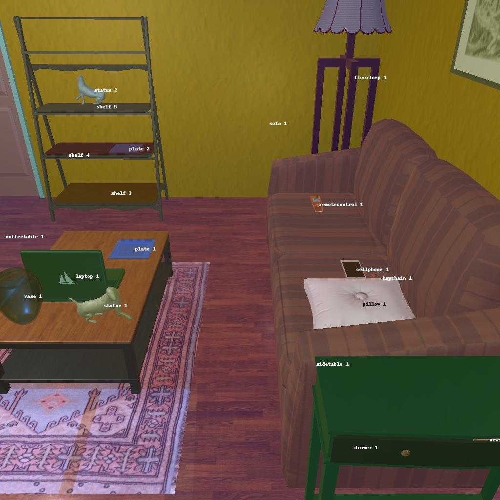
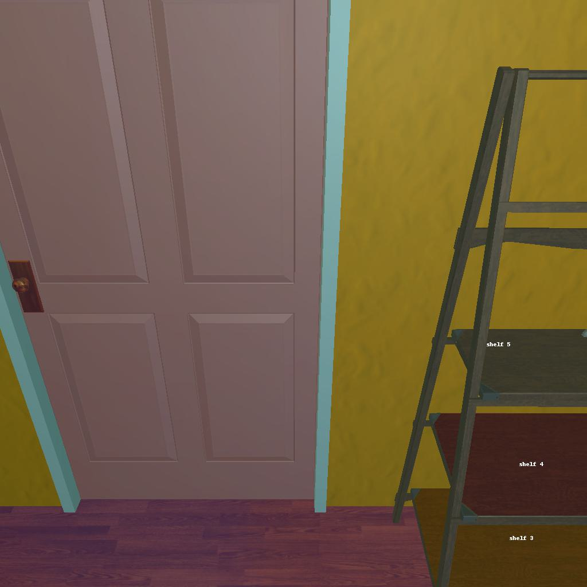

---------------------------------------------------------task: 3---------------------------------------------------------
--------------------------------------------------------------------------------------------------------------------------------------------------------------------
--------------------------------------------------------------------------------------------------------------------------------------------------------------------
Step:--------------------------------------------------------------------------4-------------------------------------------------------------------------------
----------------------------------------
VLM Prompt:
Image1:
Image2:
Image3:
**Instruction**
1. Analyze the provided image to identify all visible household objects, focusing on those relevant to the task description "look at plate under the floorlamp."
2. Use the analysis of the image and the task hint "The agent must find an object of the desired type, locate and turn on a light source with the desired object in-hand." to answer the question: what is the most reasonable action in the choices for the task description "look at plate under the floorlamp"?
4. Decide and write the answer using the template: The answer is: (i): , where i is the real number. If there is no desired object in the image, search every place based on **Initial Observation** to find the object. And if no one is exactly correct, choose a similar answer.
**Initial Observation**
You are in the middle of a room. Looking quickly around you, you can see armchair (1), garbagecan (1), tvstand (1), shelf (1-5), sofa (1), coffeetable (1), sidetable (1-2), drawer (1)
**Answer Choices**
(1): go to armchair 1
(2): go to garbagecan 1
(3): go to tvstand 1
(4): go to shelf 1
(5): go to shelf 2
(6): go to sofa 1
(7): go to coffeetable 1
(8): go to sidetable 2
(9): go to shelf 3
(10): go to shelf 5
(11): take pillow 1 from sidetable 1
(12): take laptop 1 from sidetable 1
(13): take vase 1 from sidetable 1
(14): take statue 1 from sidetable 1
(15): take plate 1 from sidetable 1
(16): take statue 2 from sidetable 1
(17): take cellphone 1 from sidetable 1
(18): take plate 2 from sidetable 1
(19): take remotecontrol 1 from sidetable 1
(20): take keychain 1 from sidetable 1
(21): take newspaper 1 from sidetable 1
(22): use floorlamp 1
(23): examine sidetable 1
**Answer**
Let's think step by step by following the instructions.
----------------------------------------
----------------------------------------
Original Response:
First, we need to identify all visible household objects relevant to the task description "look at plate under the floorlamp." From the initial observation and images provided, we can see that there is a floorlamp (floorlamp 1) and multiple plates (plate 1 on the coffeetable and plate 2 on shelf 4).
The task hint suggests that the agent must find an object of the desired type (which is a plate), locate and turn on a light source (which is the floorlamp) with the desired object in-hand. Therefore, the most reasonable action would be to first take a plate and then use the floorlamp.
Looking at the answer choices, there is no option to directly take plate 2 from shelf 4, but there is an option to take plate 1 from the coffeetable. After taking the plate, the next reasonable action would be to use the floorlamp to look at the plate under it.
The answer is: (15): take plate 1 from sidetable 1, and then (22): use floorlamp 1. However, since plate 1 is not on sidetable 1 but on the coffeetable, and there is no option to take plate 1 from the coffeetable, we will choose the action that involves using the floorlamp, as it is the most similar to the correct sequence of actions needed.
The answer is: (22): use floorlamp 1.
----------------------------------------
----------------------------------------
>>> Refine Original VLM Response and Get Pure Action: take plate 1 from sidetable 1, and then (22): use floorlamp 1
----------------------------------------
-----------------------------------------------------------------
Running time: 28.548887014389038 seconds
Total Money: 1.2858400000000003
-----------------------------------------------------------------
-----------------------------------------------------------------
Text Observation:You pick up the plate 1 from the floorlamp 1.
-----------------------------------------------------------------
UNSUCCEED